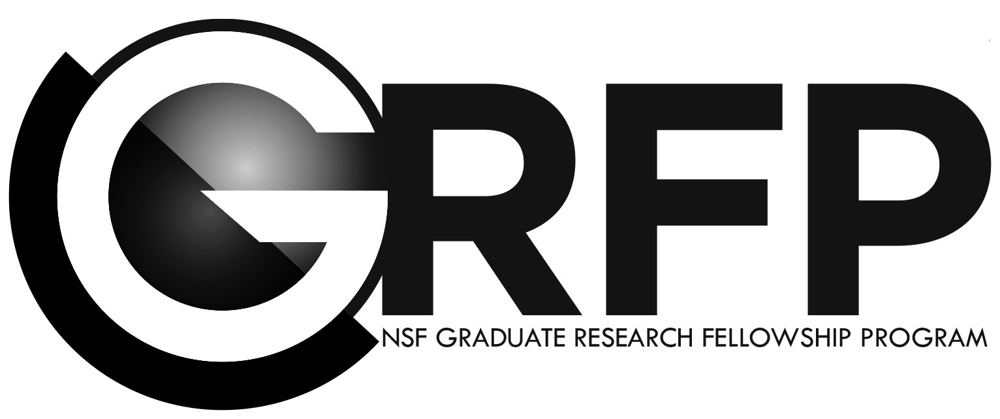

Jordan comes from Kutztown, a small town at the base of the Appalachian Mountains in rural Pennsylvania. During his undergrad at Tufts University, Jordan worked with the Tobin Group studying the electromagnetic properties of thin metal and nonmetal films deposited on copper and gold substrates. He has also done summer research fellowships in physics and applied mathematics. With the Adhikari group at Caltech, he performed parameter estimations and measurements for the planned LIGO Voyager upgrades, and with the Metric Geometry and Gerrymandering Group in Cambridge, Massachusetts, he explored the use of information entropy as a metric for assessing county splitting in district gerrymandering cases. Currently, Jordan is working on generating two-dimensional arrays of defect-free trapped alkali atoms for use as qubits in the Bernien Group's quantum simulator.
Outside of physics, Jordan is a fellow at the Sweet Water Foundation, where he teaches energy use in urban ecosystems. He also loves to enjoy the outdoors, follow politics, appreciate music and film, as well as coach and play basketball.
| WORK | EDUCATION | SERVICE | |
|---|---|---|---|
|
2020
2019
2018
2017
2016
|
Graduate Research Fellowship National Science Foundation Began Ph.D in Physics The University of Chicago Awarded B.S. in Physics Tufts University |
Joined GRIT Began working at SWF Joined UChicago PSD Equity Diversity and Inclusion Committee |